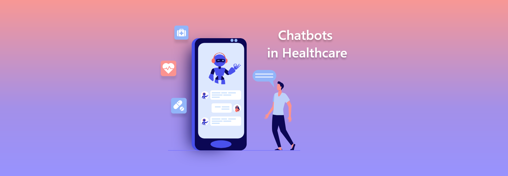

Smart healthcare is a revolutionary concept that combines the power of technology with medical science to improve the quality of patient care.
The goal of smart healthcare is to provide personalized, efficient, and effective medical assistance to patients using cutting-edge technologies such as artificial intelligence (AI), Internet of Things (IoT), and big data analytics.
Problem statement
One of the major problems in the healthcare industry is the lack of accessibility to medical professionals.
Patients often have to wait for hours to see a doctor, and this delay can lead to the worsening of their condition.
Moreover, patients in remote areas may not have access to medical facilities at all.
Objectives for helthcare bot
The objectives of a healthcare bot are to provide patients with an automated, personalized, and efficient healthcare experience.
Healthcare bot can able to quickly and accurately respond to patient questions with ailment and minimal treatment, provide personalized recommendations, and help to streamline administrative tasks.
Limitations
Chatbots are still limited in their ability to provide medical advice and assistance. While they can provide accurate information and advice, they are not able to diagnose or treat medical conditions. Additionally, chatbots may not always be able to provide the most up-to-date information, as they are not always able to keep up with changes in the medical field.
Chatbots also have limited access to medical resources and information. While they may be able to provide basic information, they may not be able to provide more detailed or specialized information.

Hardware Software Model
The hardware-software model of a healthcare AI system typically involves three main components: the hardware, the software, and the data.
Hardware: The hardware components of a healthcare AI system can include servers, data storage devices, processors, and other computing equipment. These components are used to store and process the data required for the AI system to function.
Software: The software components of a healthcare AI system can include algorithms, machine learning models, and other software tools that are used to analyze and interpret data. These components are designed to identify patterns, make predictions, and provide insights into healthcare data.
Conclusion
Chatbot technology is revolutionizing the way medical assistance is provided. By leveraging the power of artificial intelligence, chatbots can provide a more efficient, personalized and cost-effective alternative to traditional medical services. Chatbots can provide personalized medical advice, answer questions, and even diagnose and treat certain medical conditions.
Chatbots are also able to provide users with access to medical resources and information, such as hospital locations, medical advice, and drug information. As technology continues to advance, chatbots will become an even more powerful and useful tool for providing medical assistance, making them an invaluable tool for those seeking medical assistance.
Chat support
Hi. My name is pandora. An Intelligent Health assistant